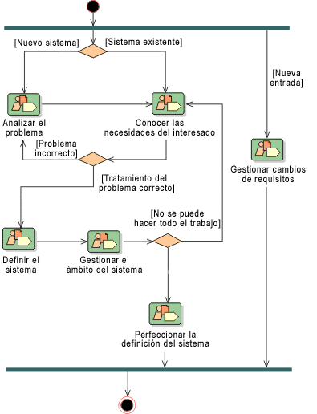

| Concepto: Patrón de posibilidad |
 |
|
|
Los patrones de posibilidad expresan y comunican el conocimiento del proceso para un área clave de interés como una disciplina o una práctica y los puede utilizar directamente un practicante de proceso para orientar su trabajo. También se utilizan como bloques de construcción para ensamblar procesos de entrega o patrones de posibilidad más grandes que garanticen la reutilización óptima y la aplicación de las prácticas clave que expresan.
Algunos ejemplos de patrón de posibilidad pueden ser 'utilizar la gestión de requisitos basada en guiones', 'utilizar
el análisis de guiones' o 'prueba de unidades'. Habitualmente, aunque no es necesario, los patrones de posibilidad
tienen el ámbito de una disciplina que proporciona un desglose de actividades complejas reutilizables, relaciones con
los roles que efectúan tareas dentro de estas actividades, así como los productos de trabajo que se utilizan y
producen. Generalmente, un patrón de posibilidad no se relaciona con una fase específica ni iteración de un ciclo
vital de desarrollo y no debe implicar ninguno. En otras palabras, un patrón debe diseñarse de modo que sea
aplicable en cualquier parte del proceso de entrega. Esto permite que sus actividades se asignen con flexibilidad
a cualquier fase en la que se esté aplicando el proceso de entrega. Una excepción pueden ser los patrones de
posibilidad que se intenta que proporcionen una plantilla para crear rápidamente una iteración o una porción de una
iteración que corresponde a una fase particular de un proceso de entrega.
El flujo de trabajo de un patrón de posibilidad suele representarse mediante la notación del diagrama de la actividad UML. 
Ejemplo de diagrama de actividad, a partir de la disciplina de requisitos de RUP, en el que se muestra el flujo de
trabajo y las transiciones. |
© Copyright IBM Corp. 1987, 2005 Reservados todos los derechos |